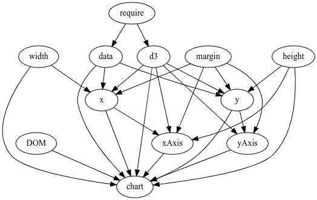
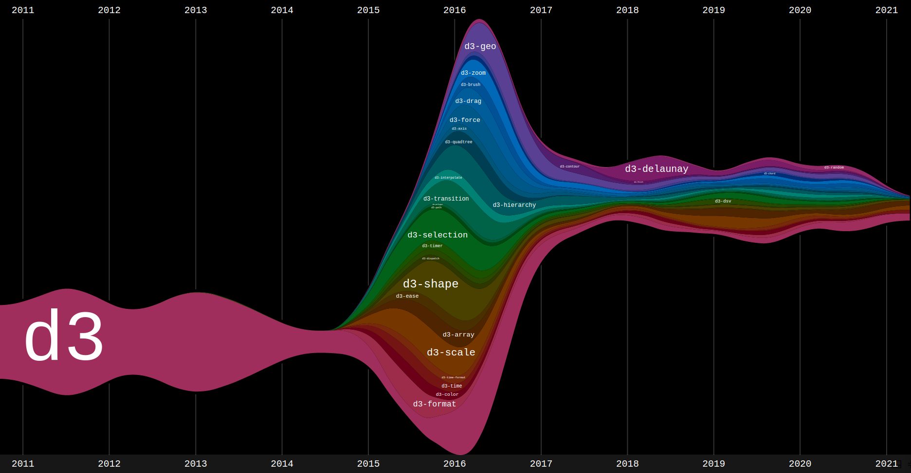

Ce qu’on va faire. Apprendre à faire des cartes animés et interactives avec Observable javascript et bertin.js dans Quarto. Ce qu’on ne va pas faire : apprendre à programmer en javascript
sss
Javascript
Historique du web Avant le web était statique Creation de js Pas créé au départ pour la visu de données. Avantages. Inconvénients. Les déboires du début. Langage qui peut être étendu. Wasm. D3.
sss
Observable Javascript
xxxxx
Observable, kezako ?
Observable javascript (ojs) est un extension du langage javascript développé par la société Observable.
Les cellules / chunk {ojs}
Dans Quarto, on peut ecrire/executer du code Observable en utilisant des chuncks {ojs}.
Chaque ligne définit une variable et une cellule qui doit être unique.
cellule 1 :
a =5
cellule 2 :
b =7
cellule 3 :
a + b
Avec ojs, l’ordre d’écriture n’a pas d’importance 🤔 On peut donc écrire :
Ceci :
c * d
Avant ça
c =3
et ça
d =8
La raison est que la relation entgre les cellules s’effectue de manière topologique.

Chaque cellule doit impérativement être unique. En conséquance, je n’ai pas le droit de redéfinir une de ces variables.
e =10e =5
Il est donc souvent utile de créer des blocs de code avec des {…} quand le traitement devient plus complexe.
Mais la plupart du temps, pour faire ce genre de calcul, on écrira plutôt des fonctions. Comme ceci :
functionsum(a, b) {return a + b;}// Appel de la fonctionsum(10,30)
Ou comme cela :
multi = (a, b) => a * b// Appel de la fonctionmulti(3,8)
Ce parti pris fort, peut être déroutant. Mais il a un gros avantage. Il permet d’organiser un document indépendemment de la façon dont on code. Cela petrmet par exemple de mettre une carte en haut de la page et en annexe technique tout en bas le code qui la génère.
D3.js
D3.js est une bibliothèque graphique JavaScript développée par Mike Bostock qui permet l’affichage de données numériques sous une forme graphique et dynamique. d3.js est une grosse librairie qui fait beaucoup de choses. Depuis 2015, elle est composée de différents modules spécialisés.

D3 est directement intégrée dans Observable javascript. On peut faire par exemple :
{ let values = [0,10,30];return d3.quantile(values,0.25);}
Et 1000 autres choses qu’on ne détaillera pas ici.
Dessiner avec D3.js
Avec D3, il est possible de dessiner des images vectorielles au format SVG.
DOM
Le Document Object Model (DOM) est une interface de programmation normalisée par le W3C, qui permet à des scripts d’examiner et de modifier le contenu du navigateur web. Par le DOM, la composition d’une page web est représentée sous forme d’un arbre avec des objets dedans.
Dans Observable, grace à la relation topologique entre les cellules, tout est réactif. Chaque fois qu’on bouge quelque chose, ce qui en dépend est rééxécuté.
viewof age = Inputs.range([15,70], {label:"age",value:30,step:1,})viewof nom = Inputs.text({label:"nom",value:"Nicolas"})
Par exemple :
md`Je m'appelle **${nom}** et j'ai **${age}** ans :-)`
Observable javascript n’est pas un écosystème fermé. Des millions de librairies javascript existent sur NPM (équivalent du CRAN pour R). Il est possible de les utiliser.
https://www.npmjs.com/
Ici, nous pouvons les importer directement avec l’instruction require()
geo =require("geoverview@1.2.1")
Version locale
geo2 =require("lib/geoverview_1.2.1.js")
Je peux maintenant utiliser la fonction view du package geoverview (qui est reniommé ici, geo).
geo.view(basemap)
Imports
On l’a dit tout à l’heure, Observable c’est aussi une plateforme web hebergeant des notebooks.
Si on a une connexion internet, il ets possible d’importer n’importe quelle cellule de n’importe quel notebook avec la fonction import.